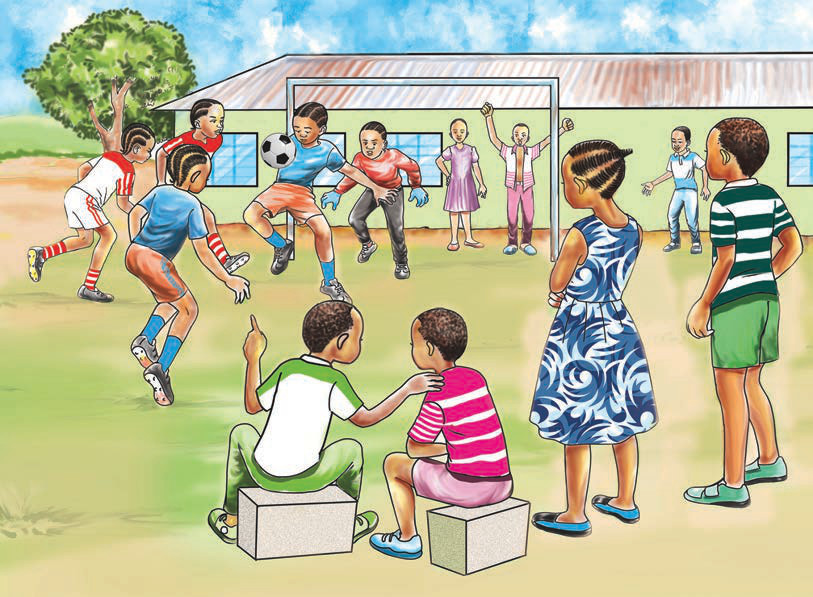

Nyumbani, tunaweza kujenga na kuendeleza uhusiano na majirani zetu kwa kushiriki katika sherehe kama sherehe za harusi na sherehe za dini. Pia, kushiriki katika vikao na michezo kama inavyoonekana kwenye Kielelezo namba 8 hujenga uhusiano katika jamii.

Vilevile, tunapaswa kushiriki katika ulinzi na kutoa taarifa ya vitendo vinavyoharibu usalama wa jamii zetu. Ushiriki huu husaidia kujenga usalama na uhusiano katika jamii.